Central PA Racing
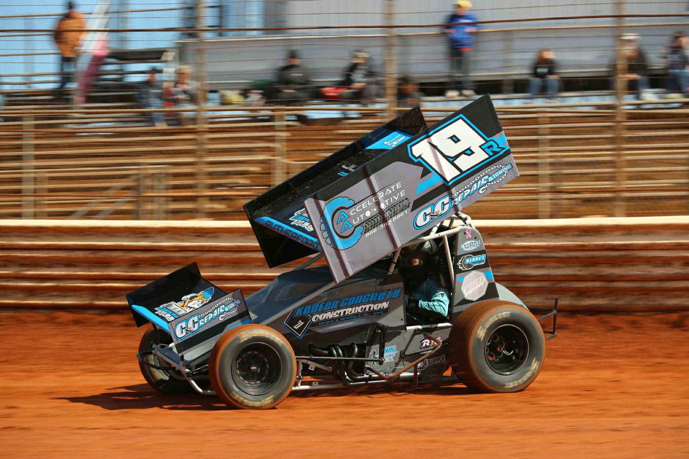
Race Tracks
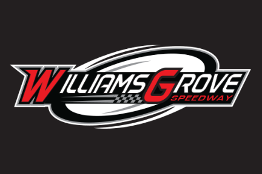
William's Grove Speeday
Mechaniscburg
William's Grove opened in 1939 and is one of the oldest continuously operating dirt tracks in the United States. It has become especially famous for its long history of sprint car racing.
Learn More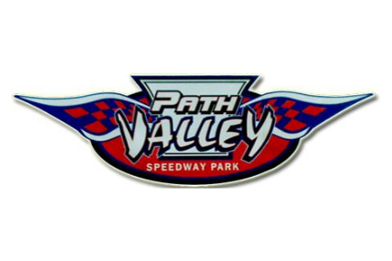
Path Valley Speedway
Spring Run
Path Valley is unusual because it features a very tight, high-banked dirt oval, creating exciting racing where drivers often run extremely close together. The track has also hosted racing for a wide variety of divisions.
Learn More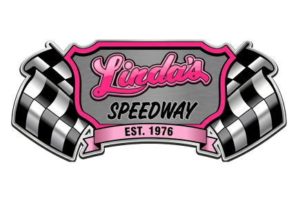
Linda's Speedway
Jonestown
Linda’s Speedway is a quarter-mile dirt oval, making it significantly smaller than many of Pennsylvania’s major dirt tracks. Its compact size creates close, fast-paced racing where drivers have little room for error.
Learn More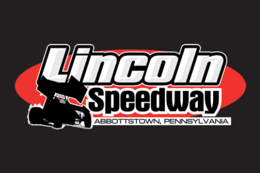
Lincoln Speedway
Abbotstown
Lincoln Speedway is nicknamed “The Pigeon Hills” because of its location in the Pigeon Hills of Adams County. The track is particularly known for its high-speed sprint car racing.
Learn More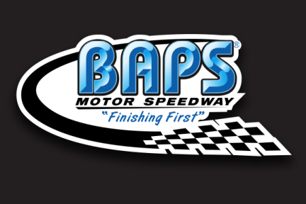
BAPS Speedway
York Haven
BAPS Motor Speedway was formerly known as Susquehanna Speedway before being renamed after BAPS Motor Speedway became the track’s new identity. It features a challenging dirt surface and hosts several different racing divisions.
Learn More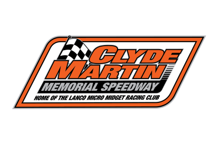
Clyde Martin Memorial Speedway
Newmanstown
Clyde Martin Memorial Speedway is dedicated to micro racing rather than full-size race cars. It has helped introduce many young drivers to competitive racing before they move into larger divisions.
Learn More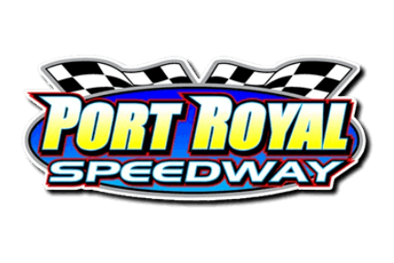
Port Royal Speedway
Port Royal
Port Royal is nicknamed “The Speed Palace.” Its long history dates back to 1938, and it has become one of the premier sprint car racing venues in Pennsylvania.
Learn More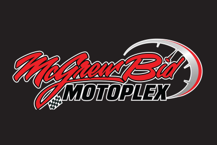
McGrewbid Motoplex
York Haven
McGrewBid Motoplex Speedway is a dirt track known for its fast-paced racing and variety of motorsports events. A unique feature is its compact, high-speed layout, which creates close and exciting racing.
Learn More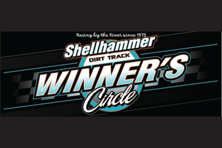
Shellhammer Dirt Track
Newberry
A fast-paced dirt track known for “Wingless Wednesdays” and a welcoming atmosphere, bringing local drivers and racing fans together for a night at the track.
Learn More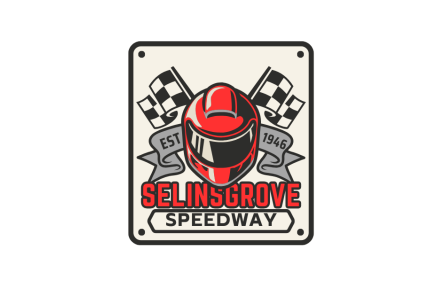
Selinsgrove Speedway
Selinsgrove
Selinsgrove Speedway is famous for its large half-mile dirt oval, which makes it one of the faster and more challenging dirt tracks in Pennsylvania. It has a particularly strong connection to sprint car racing.
Learn More